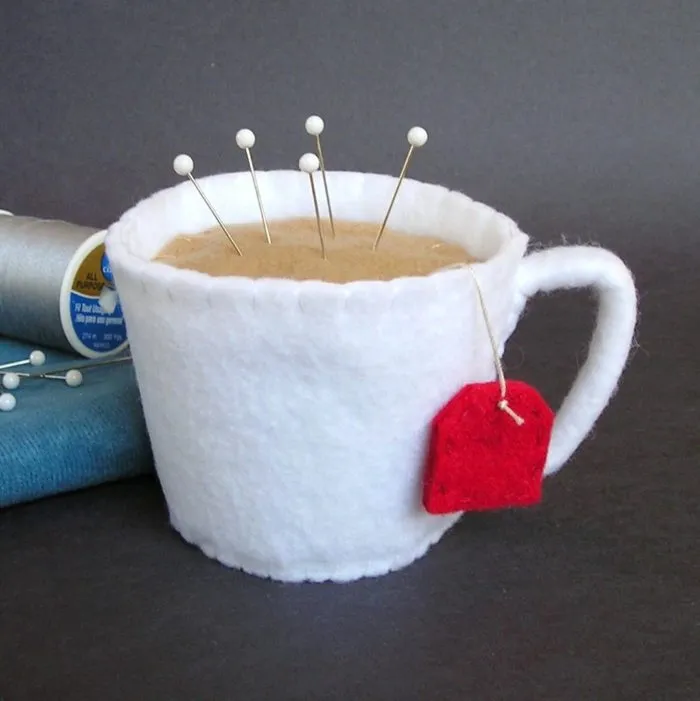

Odin Recipes
Coffee

description
A caffeinated elixir, the answer to life's morning mysteries,
brewed with beans and a dash of cosmic consciousness.
ingredients
- 1 cup coffee
- 1 spoonful of sugar (optional)
- 1 drizzle of milk (also optional)
directions
- marry the coffee and hot water
- introduce coffee to sugar and milk (if they are so inclined)
- enjoy in a cup or mug 2-4 times daily, or as otherwise prescribed by a medical professional